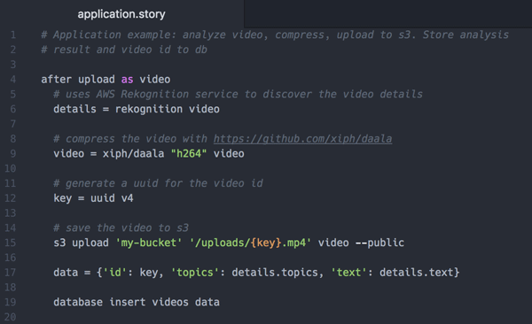
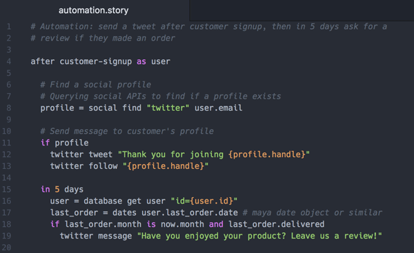
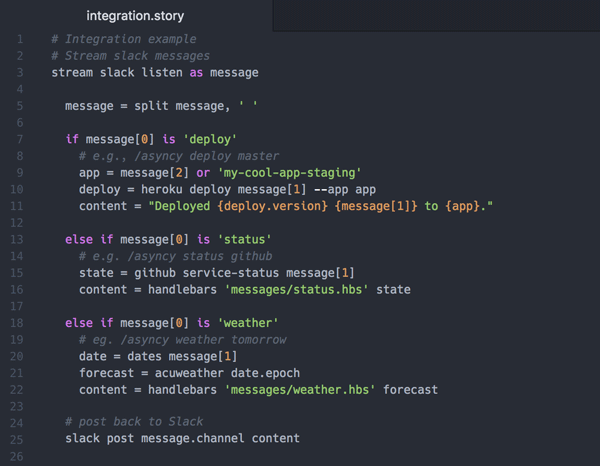

name: inverse class: center, middle <br> The dawn of choreographed microservices. --- class: center, middle ### Software development <b class="yellow">today</b>. --- class: center, middle ### <b class="orange">Monoliths</b> are globs of tape and glue. <!-- By definition, one stack and one primary langauge. Difficult to scale properly. High techniqual debt. --> --- class: center, middle ### <b class="skyblue">Microservices</b> are architecture nightmares. <!-- Forces focus on architecture vs application design. Hard to avoid service coupling. ??? --> --- class: center, middle ### What does the <b class="yellow">future</b> hold? --- class: center, middle Introducing ## <b class="olive">Choreographed microservices.</b> --- class: middle, center #### An environment of intelligently <b class="skyblue">orchestrated microservice</b><br>governed by a <b class="pink">program of high-level logic</b>. --- class: center, middle ### Let's review the goals. --- class: middle #### Separate <b class="skyblue">logic</b> from <b class="pink">code</b>. #### Rapidly <b class="olive">prototype</b> into <b class="orange">production</b>. #### <b class="yellow">Automate</b> orchestration to reduce <b class="pink">devops</b>. #### Integrated <b class="skyblue">service discovery</b> in development and production. #### Reduce, reuse, and recycle services <b class="orange">reducing technical debt</b>. #### Logging, monitoring, and debugging <b class="olive">built-in</b>. --- class: center, middle ### So, what does this look like? --- class: center, middle ### <b class="skyblue">Logic</b> is written as stories. Portable and version controlled. Transparent operations. Expressive syntax. Easy to refactor. --- class: center, middle ### <b class="pink">Code</b> is developed as mircoservices. Specialized operations. Any language. No coupling. Reusable. --- class: center, middle ### <b class="skyblue">Service Discovery</b> Aggregated, cross-application metrics and logging. Environment and port mapping. Manifest of service functions. Playground for testing. --- class: center, middle ### <b class="orange">Engine</b> to execute <b class="skyblue">stories</b>. Robust container orchestration. Rolling deployments. No vendor-lockin. Cloud agnostic. --- class: center, middle ### Sexy <b class="pink">dev tools</b>. IDE plugin for service discovery. Integrated CI/CD pipelines. Complete CLI tooling. GitHub Integration. --- class: center, middle ### All in a <b class="skyblue">free and open source</b> platform. --- class: center, middle Introducing <small>The choreographed microservice platform<br>for rapid application development.</small> #### Write stories, then code. --- class: center, bottom ## Meet Storyscript Syntax-light for readability.  --- class: center, bottom ## Marketing Automation Social media. User retention. Campaign logic.  --- class: center, bottom ## Devops Chat ops. Continuous-delivery. Cron jobs.  <!-- .left[ ```python event user-signup as user mailchimp send --template "welcome" --to user.email in 5 days if user.number_of_orders is 0 handler = twitter find user.email twitter tweet '@{{handler}} use "firstorder" at checkout for 20% off.' ``` ] --> --- class: center, middle ### Join our story. https://asyncy.com [github.com / asyncy](https://github.com/asyncy)